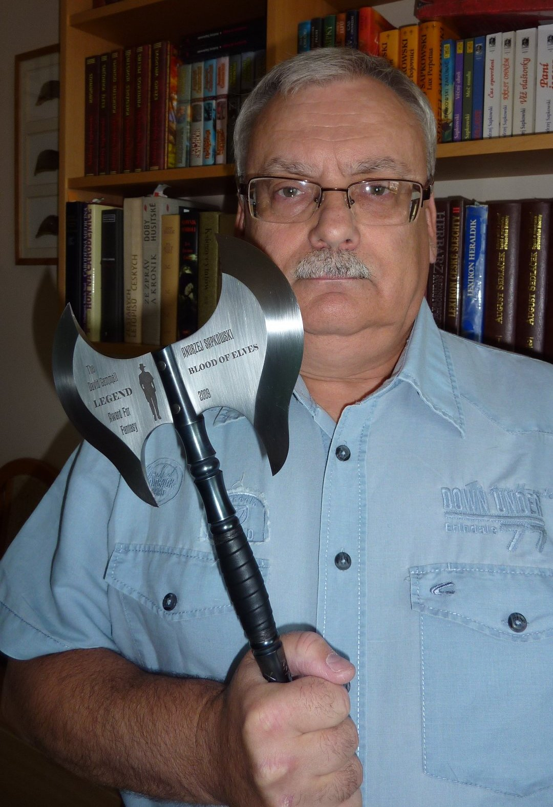

Witcherpedia
Andrzej-Sapkowski
Sapkowski studied economics, and before turning to writing, he had worked as a senior sales representative for a foreign trade company. He started his literary career as a translator, in particular, of science fiction. He says he wrote his first short story, "The Witcher" ("Wiedźmin", also translated "The Hexer" or "Spellmaker") on a whim, in order to enter a contest by Polish science fiction and fantasy magazine Fantastyka. Being an expert in marketing[citation needed], he says he knew how to sell, and indeed, he won the 3rd prize. The story was published in Fantastyka in 1986 and was enormously successful both with readers and critics. Sapkowski has created a cycle of tales based on the world of "The Witcher", comprising three collections of short stories and five novels. This cycle and his many other works have made him one of the best-known fantasy authors in Poland in the 1990s. The main character of "The Witcher" is Geralt, a mutant hunter who has been trained since childhood to hunt down and destroy monsters. Geralt exists in a morally ambiguous universe, yet manages to maintain his own coherent code of ethics. At the same time cynical and noble, Geralt has been compared to Raymond Chandler's signature character Philip Marlowe. The world in which these adventures take place is heavily influenced by Slavic mythology. Sapkowski has won five Zajdel Awards, including three for short stories "Mniejsze zło" ("Lesser Evil") (1990), "Miecz przeznaczenia" ("Sword of Destiny") (1992) and "W leju po bombie" ("In a Bomb Crater") (1993), and two for the novels, Krew elfów (Blood of Elves) (1994) and Narrenturm (2002). He also won the Spanish Ignotus Award, best anthology, for The Last Wish in 2003, and for Muzykanci (The Musicians), best foreign short story, same year. In 1997, Sapkowski won the prestigious Polityka's Passport award, which is awarded annually to artists who have strong prospects for international success.